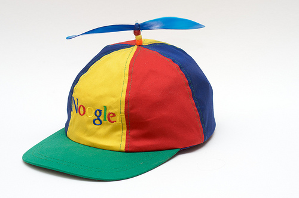
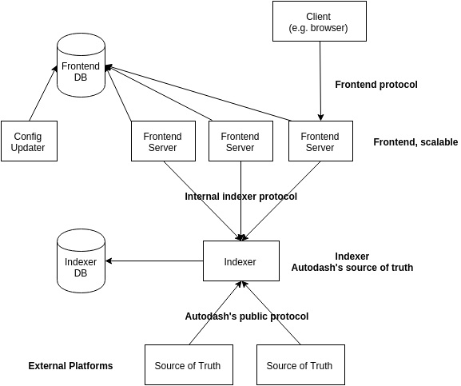

Stage Toegepaste Informatica
Zomer 2015
Ruben Vereecken
Overzicht
- Introductie
- Stagevoorbereiding
- Over Google en Gmail SRE
- Eerste weken
- Ontwikkelomgeving en tools
- Mijn Project
- Evaluatie
1. Introductie
Over mij
- Student Computerwetenschappen: AI
- Interesse in uitdagingen
- Interesse in eigen bedrijf opstarten
Stage
- Software Engineering Internship bij Google
- Team Gmail SRE
- In Zurich voor 3 maanden
Waarom een tech gigant zoals Google?
- Ervaring opdoen in unieke omgeving
- Zien hoe een gigant vanbinnen werkt
- Eigen kunnen toetsen aan hoge standaarden
2. Stagevoorbereiding
3 bedrijven
- Facebook: niet gelukt
- Microsoft: aanbod gekregen
- Google: met moeite en na lang wachten
Praktische voorbereiding
2 boeken:
- Elements of Programming Interviews
- Cracking the Coding Interview
Verschillende sites:
- Project Euler
- Hacker Rank
- Glassdoor
- ... En wat anderen
3. Over Google en Gmail SRE

- Tech gigant sinds 1997
- Bekend door Search, YouTube, Maps, Android, etc
- Deel van Alphabet Inc sinds augustus
Google Zurich
- Grootste kantoor in Europa
- ~2000 werknemers in 2 gebouwen
- Meeste interns
Site Reliability Engineers
- Verantwoordelijk voor infrastructuur, releases, performantie
- On-call rotatie
- Nadruk op engineers: automatiseren alles
Gmail SRE
- 2 teams van samen 10-15 mensen
- Product van +1M gebruikers
- Uniek in opzet van monitoring en redundantie
- Heel volwassen: weinig verandering, weinig noodgevallen
4. Eerste weken
Lessen, workshops en brainwashing
- Sessies over security, confidentiality, teamwork
- Workshops over interne tools zoals Perforce en Bazel
- Lessen over Google Search en nieuwe producten
Infrastructure Intern Summit @ Dublin
- Mensen ontmoet die de datacenters onderhouden
- Workshops over on-call problemen oplossen
- War stories over grote interne crisissen
5. Ontwikkelomgeving en tools
Version Control
Perforce is het standaardsysteem:
- Iedereen interageert met centrale server
- Iedereen heeft gedeeltelijke checkout, maar toch veel dependencies
Maar ook veel andere flavors om met code te werken.
- Client in the Cloud (CitC)
- Git5: git wrapper
Code Search en Critique
Code Search
- Platform om in de code te zoeken
Critique
- Platform om met ChangeLists te werken
- Gebruikt voor het review proces
- Motivaties voor code
Code Reviews
- Controle op kwaliteit, tests,...
- Owner approval
- Readability per taal
Bazel
- Google's build tool a la Make
- Volledig gedistribueerd, niets wordt lokaal gecompileerd
- Werkt voor alle talen, eenvoudig uitbreidbaar
- Automatische dependency management
- Automatisch tests bouwen en uitvoeren
Protocol Buffers
- Een Google-wijd dataformaat en meer
- Automatisch gegenereerde compatibele clients en servers
- Staat toe dat protocols uitgebreid worden
- Ook gebruikt voor RPC services
- Enorm performant in binair formaat
6. Mijn Project: Autodash
The ultimate Automation Dashboard.
Achtergrond
- Automation: automatisering van processen zoals rollouts
- Maar... Een strijd gestreden op vele fronten
- Vele pogingen om een universeel platform te maken
- Huidige stand: iedereen heeft eigen flavor van laatste poging
Wat is Autodash
- Automation Dashboard
- Het begin van een oplossing voor de huidige dystopie
- Een dashboard dat een snel overzicht biedt
- ... En daarbij ook heel geavanceerd zoekbaar voor specifieke info
- Haalt informatie uit alle relevante bronnen
- Federated: wordt aangeboden als Platform As A Service
Autodash Design
Autodash Implementation: Frontend
- Server geschreven in Go
- One-page web app in Angular.js 1.3
- Alle data over JSON requests
- Geschreven in JavaScript Closure
- Google Material's design specification
- RPC's werden doorgestuurd naar Indexer
Autodash Implementation: Indexer
- Geschreven in Go
- Meeste data in-memory bijgehouden
- De rest in een gedistribueerde NoSQL database
- Endpoints voor de public API om data aan te nemen
- Endpoints voor de interne API om queries te beantwoorden
Autodash Resultaten
- Volledig bruikbaar prototype dat met echte data werkt
- Goed ontvangen op de Automation Summit
- Reeds een aantal experimentele gebruikers die nieuwsgierig waren
- Grondig gedekt door tests
- Volledig gemonitord op gebruik
Maar...
- Nog niet schaalbaar voor veel data
- Problemen met 'verse' data
- Nog niet erg veilig
7. Evaluatie
Technische lessen
- Angular.JS + JavaScript Closure
- Go
- Protocol Buffers
- Tests
- Omgaan met gigantische code repositories
- Interne talks en papers over Machine Learning
Andere lessen
- Geleerd het heft in handen te nemen
- Geleerd hoe het er in een groot bedrijf aan toe gaat
Eindwoord